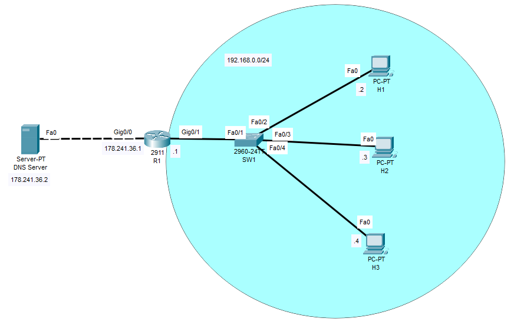

A
B
C
D
Každá webová stránka, internetová služba je dostupná pomocí své IP adresy.
Problém však je, že IP adresy jsou těžko zapamatovatelné a jejich užití není tak uživatelsky přívětivé.
Tento problém právě řeší DNS (Domain Name System) protokol. Ten totiž překládá IP adresy na lidsky snadno zapamatovatelná doménová jména, která tím pádem půjdou použít k přístupu na webové stránky či služby.
DNS je postaveno na tom, že máme nějaký/á zařízení a v tom/těch zařízení je definováno to, že IP adresa je přiřazená k danému doménovému jménu.
Jako příklad zde nyní můžu uvést situaci, kdy na počítači v naší lokální síti nastavíme, že IP adresa "192.168.0.1" je také označená doménovým jménem "router". Kdybychom poté chtěli ten router pingnout, tak by se nám naskytla příležitost k tomu použít místo IP adresy jeho doménové jméno.
Na Internetu je však již tento proces poněkud složitější a vyžaduje součinnost několika specifických DNS serverů.
Příklad:
PC1 se chce dostat na stránky "www.google.com"
Jak PC1 tedy zjistí IP adresu stránek Googlu?
Za předpokladu, že PC1 nemá k doménovému jménu manuálně přiřazenou IP adresu a v poslední době na googlu nebyl (DNS Cache na PC1), se stane následujicí.
K celé této operaci využívá DNS porty TCP a UDP 53. UDP 53 je používáno standardně pro DNS zprávy menší než 512 bytů. TCP 53 pouze pokud je velikost DNS zprávy větší jak 512 bytů.
Příklad:
Zprovozni v síti DNS:
Nejdříve na routeru zprovozníme DNS (povětšinou automaticky zapnuté):
R1(config)#ip domain-lookup
Dále manuálně na R1 specifikujeme, jakou IP adresu má DNS Resolver:
R1(config)#ip name-server 178.241.36.2
Nyní nastavíme routeru doménové jméno (to se automaticky připíná k hostname bez domény ping H1 --> ping H1.R1):
R1(config)#ip domain-name R1
A na konec si lokálně namapujeme IP adresy hostů 1-3 na doménová jména:
R1(config)#ip host H1 192.168.0.2 R1(config)#ip host H2 192.168.0.3
Konfiguraci DNS v PT si můžete vyzkoušet zde.
| Příkazy | Popis | Mód |
|---|---|---|
| ip domain lookup | Zprovozní DNS lookup | Global Config |
| ip name-server {ip_adresa_DNS_serveru} | Určí adresu DNS serveru | Global Config |
| ip domain-name {doménové_jméno} | Určí doménové jméno zařízení | Global Config |
| ip host {doménové_jméno} {ip_adresa_zařízení} | Vypne DTP na interfacu | Global Config |
| ip dns server | Udělá ze zařízení DNS Server | Global Config |
DNS nebo-li Domain Name System protokol je jeden z důležitějších protokolů. Slouží k překladu lidsky nečitelných IP adres na lidsky čitelná domenová jména.
DNS funguje na tom principu že uživatel posílá dotazy (DNS Query) DNS Serveru, zda neví která IP adresa pasuje k danému doménovému jménu.
DNS používá jak TCP tak UDP porty. Když je DNS Query menší jak 512 bytů, použije UDP 53. Jakmile je však větší než 512 bytů použije TCP 53.
A
B
C
D